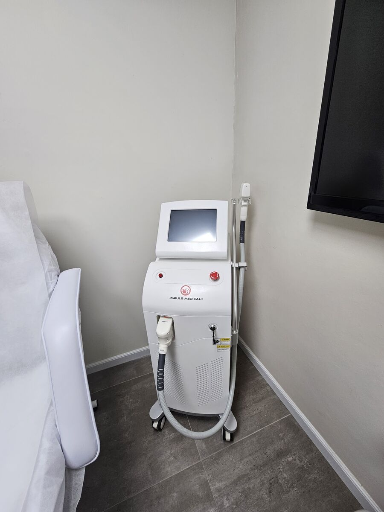
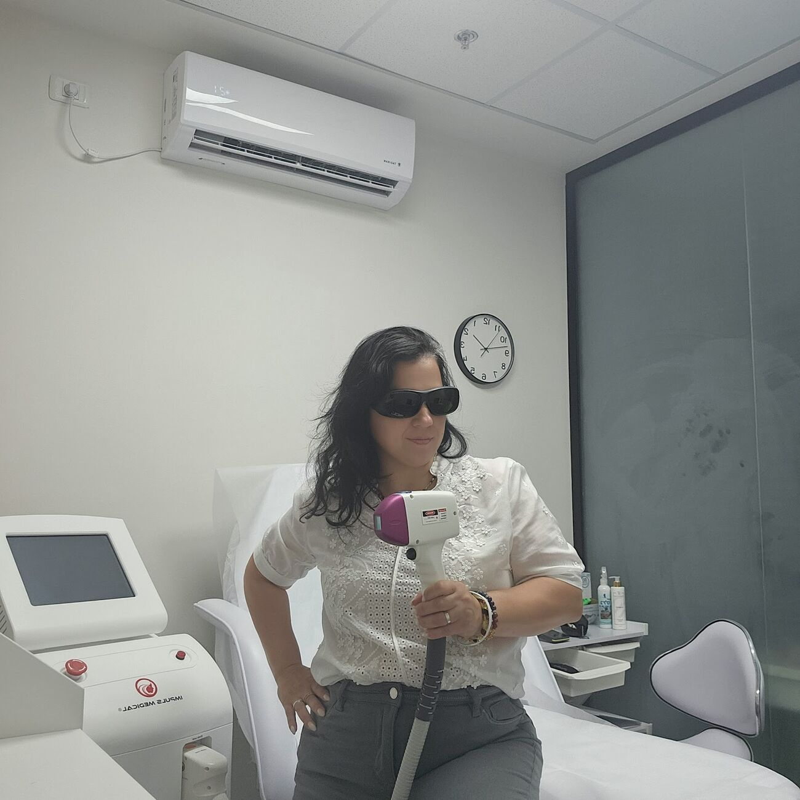
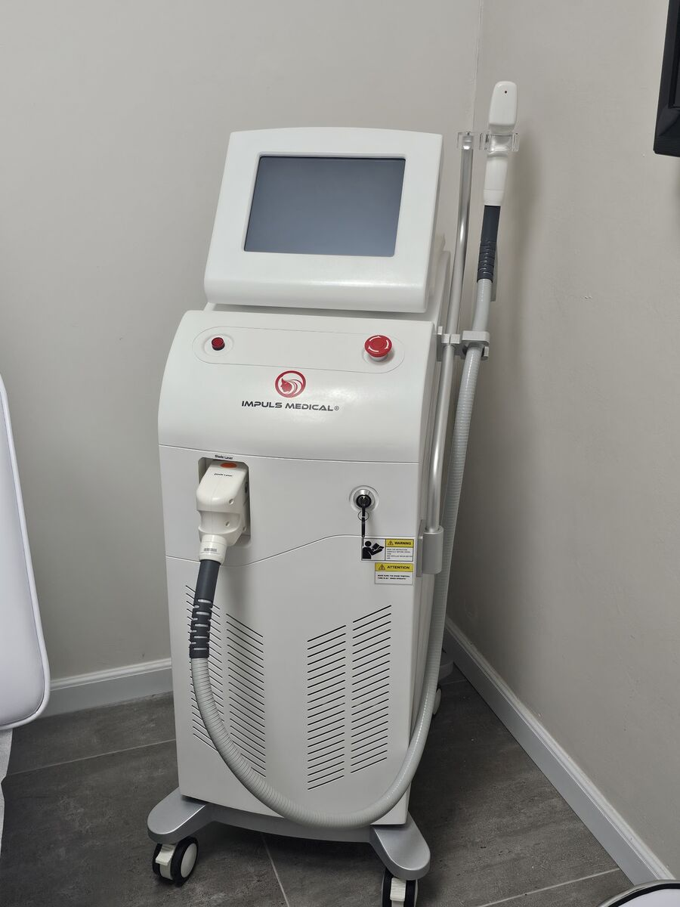
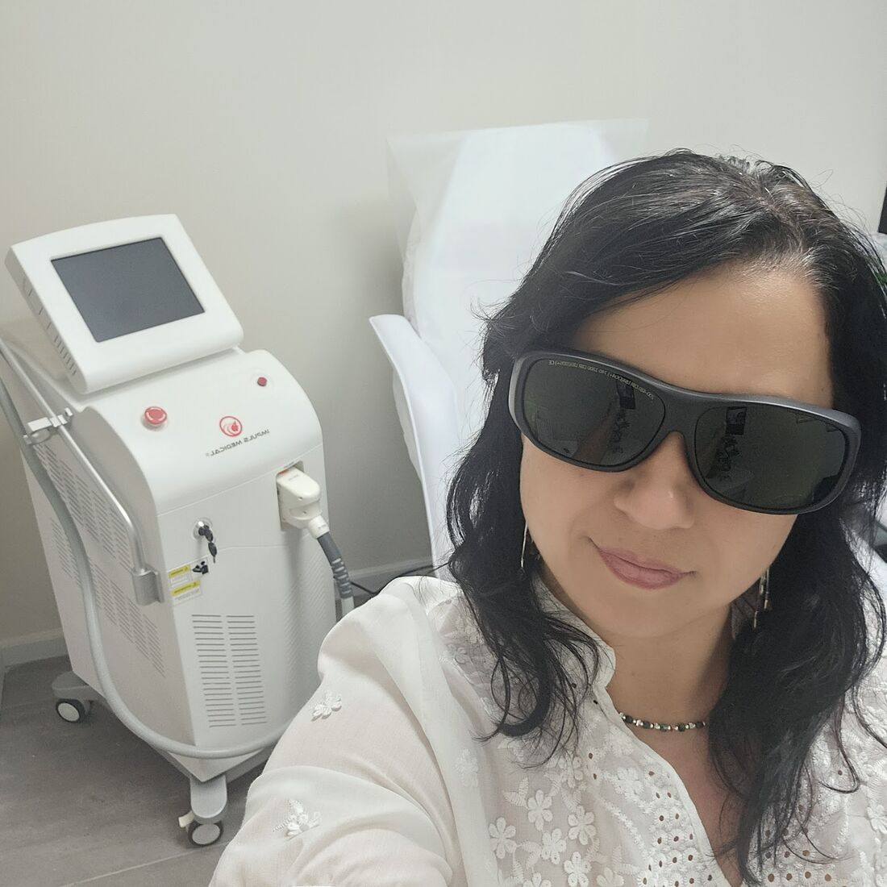
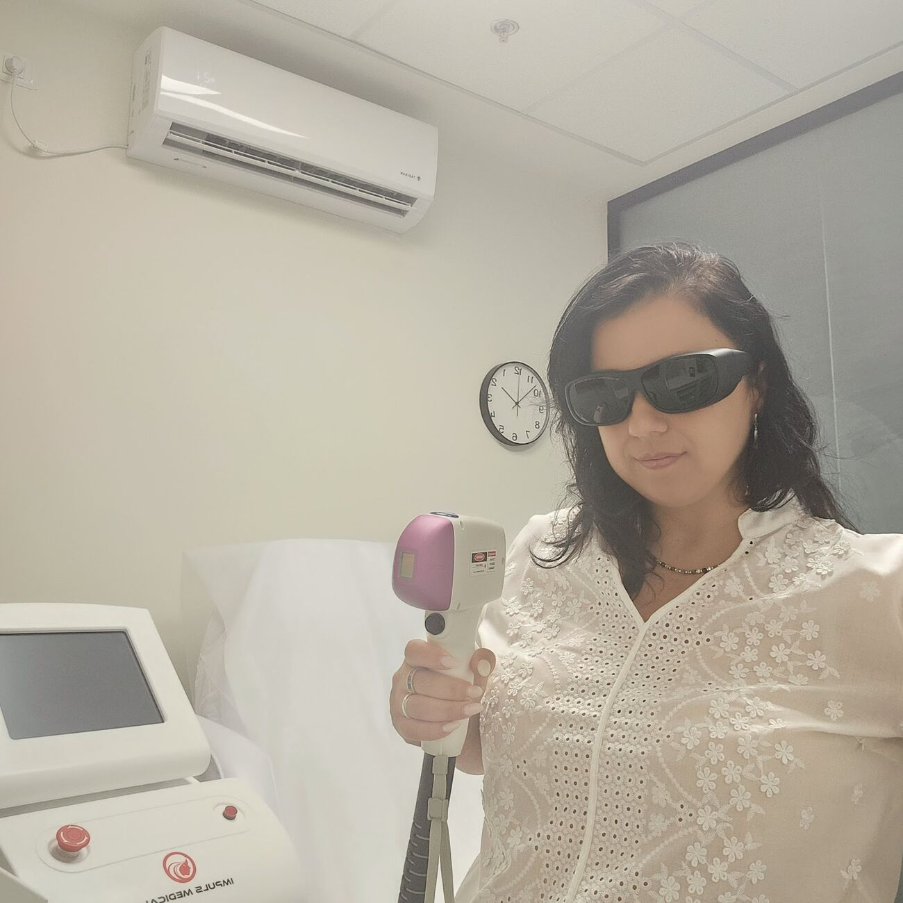
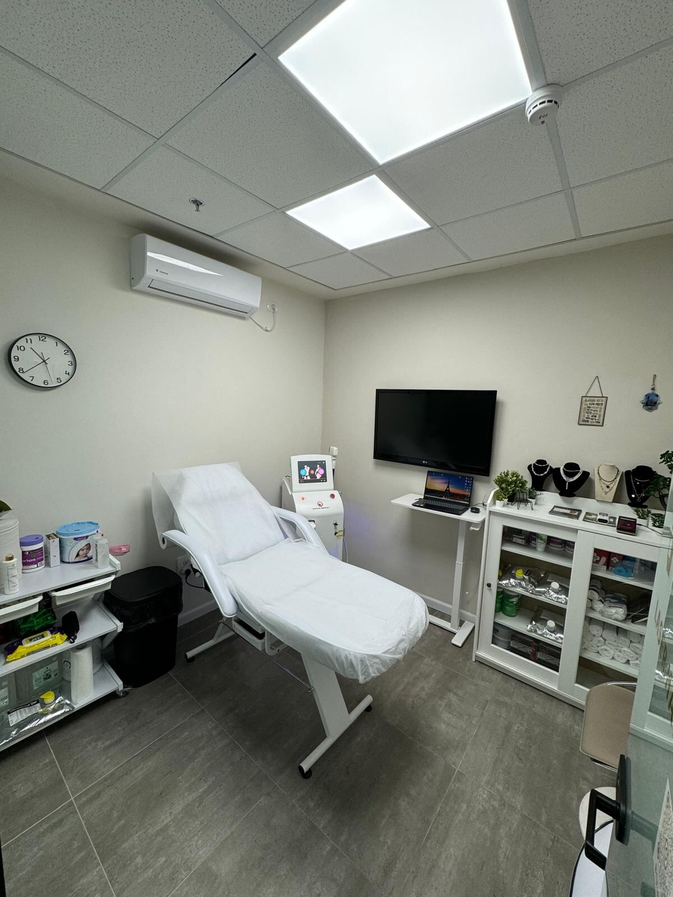
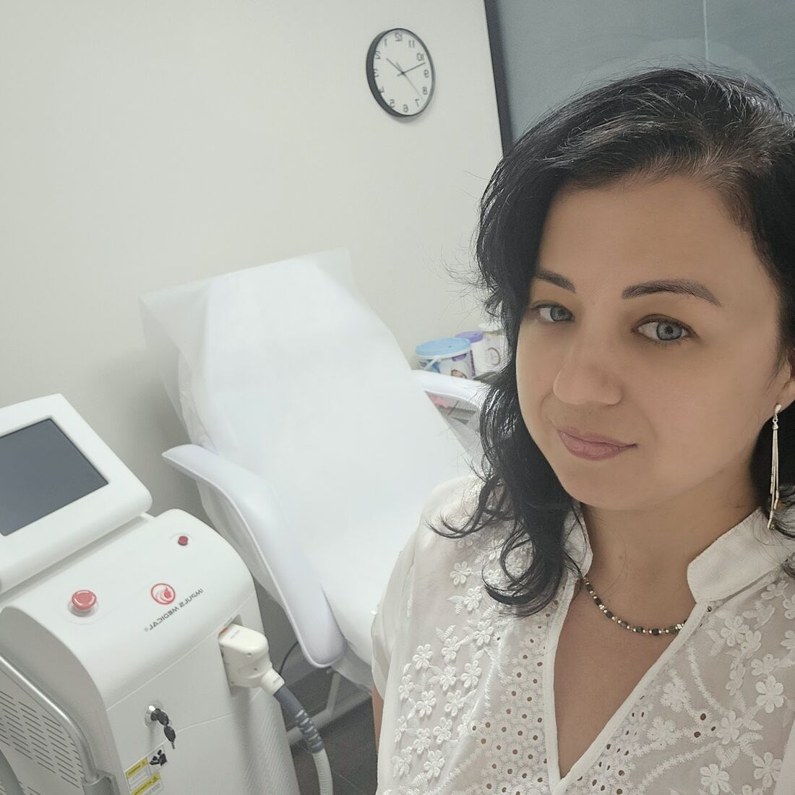
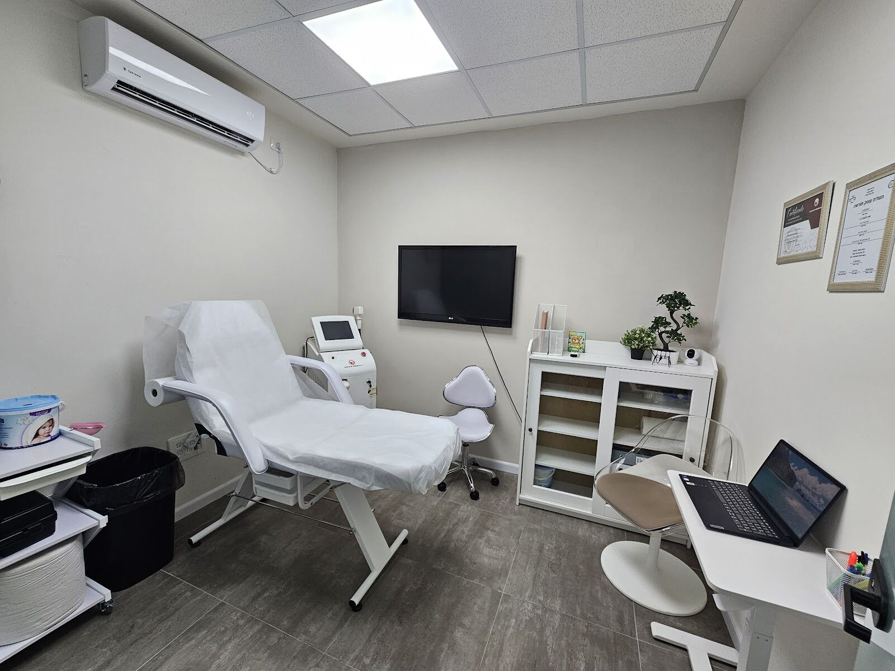

מכשיר הלייזרThe laser
“המכונה שרוב הזמן ממש נעימה במגע עם העור” · lior alfasi“The machine, most of the time, feels really pleasant on the skin” · lior alfasi (translated from Hebrew)
קונספט לדוגמה שנבנה עבור ATLAS BEAUTY אטלס ביוטי · זה אינו האתר הרשמי של העסקA sample concept built for ATLAS BEAUTY · This is not the business’s official website
הסרת שיער בלייזר, בקריית מוצקין.Laser hair removal, in Kiryat Motzkin.
קליניקה רגועה ברחוב שושנה דמארי 4. יוליה מסבירה, מתאימה ומטפלת.A calm clinic at 4 Shoshana Damari St. Yulia explains, tailors and treats.






כך נראה החדר כשמורידים את משקפי המגן.The room, once the safety goggles come off.

שושנה דמארי 4 · קריית מוצקין4 Shoshana Damari St · Kiryat Motzkin
לפני שמתחילים, יוליה מסבירה על הטיפול ומתאימה אותו אליכם.Before anything starts, Yulia explains the treatment and tailors it to you.
“יוליה אשה מקסימה, בעלת ידע נרחב בתחום, אפשר לדבר איתה על הכל”“Yulia is a lovely woman with wide knowledge of the field; you can talk with her about anything”
מהשיחה הראשונה ועד התור הבא.From the first chat to the next appointment.

“המכונה שרוב הזמן ממש נעימה במגע עם העור” · lior alfasi“The machine, most of the time, feels really pleasant on the skin” · lior alfasi (translated from Hebrew)
מתחילים בהסבר ובטיפול ראשון להיכרות.It starts with an explanation and a first treatment to get to know you.
“לי קסם העניין שמתאים לשערות בהירות” · miri levi“What won me over is that it suits light hair” · miri levi (translated from Hebrew)
נקבע לפי קצב הצמיחה של השיער.Set by how fast the hair grows back.
“הקליניקה יפה ונעימה עם אווירה רגועה” · A.L.“The clinic is lovely and pleasant, with a calm atmosphere” · A.L. (translated from Hebrew)
“יוליה מקצועית, אנושית, נעימה, קבעה איתי פגישה, הסבירה לי בסבלנות ובמקצועיות על הטיפול…”
“Yulia is professional, human and pleasant; she set a meeting with me and explained the treatment patiently and professionally…”
“יוליה מקצועית מאוד, אדיבה ונותנת שירות איכותי וברמה גבוהה. תמיד מקבלת עם חיוך, יחס חם ומשפחתי.”
“Yulia is very professional, kind, and gives quality, high-level service. Always welcomes you with a smile, warm and family-like.”
“קיבלתי רושם של יחס חם, מקצועי, אישי ומעצים… גולת הכותרת היא היחס החם, האישי והמעצים שאיתו אני יוצא מהטיפולים.”
“I got an impression of warm, professional, personal and empowering care… the highlight is the warm, personal, empowering attitude I leave the treatments with.”
“הרגשה טובה , לא כואב … ובנוסף תמיד יש אוזן קשבת”
“A good feeling, not painful … and there’s always a listening ear”
“יוליה מאוד נחמדה שירותית ומקצועית מאוד והתוצאות של הלייזר פשוט מושלם!”
“Yulia is very nice, attentive and very professional, and the laser results are simply perfect!”
בוחרים אזור ויום, וההודעה ליוליה נכתבת לבד.Pick an area and a day; the message to Yulia writes itself.
ברחוב שושנה דמארי 4, קריית מוצקין. המפה נמצאת למטה.At 4 Shoshana Damari St, Kiryat Motzkin. The map is just below.
ראשון עד חמישי 9:00–21:00, שישי 9:00–17:00. בשבת סגור.Sunday to Thursday 9:00–21:00, Friday 9:00–17:00. Closed on Saturday.
לקוחה כתבה בגוגל: “לי קסם העניין שמתאים לשערות בהירות”. על המקרה שלכם הכי טוב לשאול את יוליה.A client wrote on Google: “What won me over is that it suits light hair” (translated from Hebrew). For your own case, it’s best to ask Yulia.
שולחים הודעה בוואטסאפ או מתקשרים, וקובעים פגישה ראשונה להיכרות.Send a WhatsApp message or call, and set a first meeting to get acquainted.